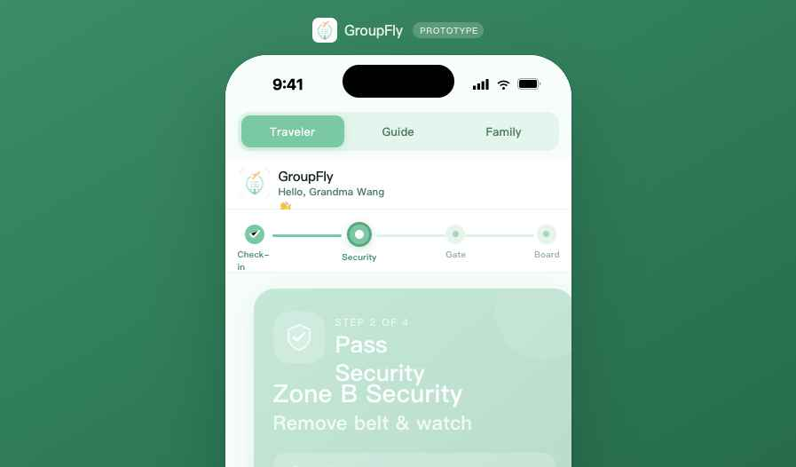

1. 产品简介 / Product Overview
What is GroupFly and who is it for?
GroupFly 是一款面向老年人团体出行场景的移动应用原型，旨在解决老年旅行者在机场流程中的迷失、焦虑和求助难题，同时为领队提供实时的团员状态监控，并让家属随时掌握旅行进度。
本原型为课程演示版本，在浏览器中以 iOS 手机框架呈现，支持三个用户角色的交互演示。
GroupFly is a mobile app prototype designed for elderly group travel. It solves the navigation anxiety seniors face at airports, gives tour guides real-time group status monitoring, and lets family members follow the journey from home.
This is a browser-based course prototype rendered inside an iOS phone frame, supporting interactive demos across three user roles.
旅行者 / Traveler
老年旅行者，需要清晰的逐步引导完成机场流程（值机 → 安检 → 登机口 → 登机）。
Elderly traveler needing step-by-step airport guidance.
领队 / Tour Guide
团队领队，实时掌握所有成员的证件、行李、值机及位置状态，并处理警报。
Tour guide monitoring document, baggage, check-in & location status for all members.
家属 / Family
在家等候的家人，通过时间线实时跟踪旅行者的出行里程碑，获得安心感。
Family members at home tracking the traveler's journey milestones in real time.
2. 打开原型 / Opening the Prototype
How to launch GroupFly in your browser
原型是一个独立的 HTML 文件，无需安装任何软件，直接用浏览器打开即可运行。推荐使用 Chrome 或 Safari。
The prototype is a self-contained HTML file — no installation needed. Open it directly in a browser. Chrome or Safari is recommended.
在项目文件夹中找到 Group Air Travel.html，即为原型主文件。
Find Group Air Travel.html in the project folder — this is the main prototype file.
双击该 HTML 文件，系统将自动用默认浏览器打开。
Double-click the file; your default browser will open it automatically.
页面加载完成后，将看到绿色背景上居中显示的 iPhone 手机框架，顶部标有 GroupFly · PROTOTYPE。
Once loaded, you'll see an iPhone frame centered on a green background, labelled GroupFly · PROTOTYPE at the top.

图 2-1 · 原型在浏览器中加载后的效果（显示旅行者视图）
Fig 2-1 · Prototype loaded in browser, showing Traveler view
提示 / Tip：所有 .jsx 源文件和 Group Air Travel.html 必须放在同一目录下，否则原型无法正常显示。
All .jsx source files and Group Air Travel.html must remain in the same folder, or the prototype will not display correctly.
3. 角色切换 / Role Switcher
Switching between the three user perspectives
手机屏幕顶部有一个三段式切换栏，分别对应三个用户角色。点击任意标签即可切换到对应视图，当前激活的标签会高亮显示（绿色填充）。
屏幕下方还有三个角色描述标签（带 emoji），同样可以点击切换角色。
At the top of the phone screen is a three-segment tab bar, one per user role. Tap any label to switch — the active tab is highlighted in green. The three pill buttons below the phone also switch roles.
▲ 绿色填充 = 当前激活 / Green fill = currently active
| 标签 / Tab | 对应角色 / Role | 主要功能 / Main Function |
|---|---|---|
| Traveler | 老年旅行者 / Elderly traveler | 逐步机场引导 + SOS 紧急求助 Step-by-step guidance + SOS |
| Guide | 团队领队 / Tour guide | 成员状态总览、地图定位、警报处理 Member overview, map, alerts |
| Family | 家属 / Family member | 旅行时间线跟踪 + 自动通知 Journey timeline + auto notifications |
4. 旅行者视图 / Traveler View
Step-by-step airport guidance for elderly travelers
旅行者视图以大字体、高对比度的卡片形式，将机场流程分为 4 个清晰步骤，每次仅显示当前步骤，减少认知负担。顶部进度条帮助旅行者了解自己在整体流程中的位置。
The Traveler view breaks the airport journey into 4 clear steps, showing only the current step at a time with large text and high-contrast cards. A progress bar at the top shows where the traveler is in the overall process.
4.1 进度步骤 / Progress Steps
Step 1 · 值机 / Check-in
前往 C12 柜台（2 号航站楼 2 楼）完成值机。
Go to Counter C12, Terminal 2 Level 2.
💡 请携带护照及机票
Bring passport & ticket
Step 2 · 安检 / Security
通过 B 区安检，脱掉腰带和手表。
Zone B Security — remove belt & watch.
💡 遵从工作人员指引
Follow staff instructions
Step 3 · 登机口 / Gate
前往 G15 登机口（3 楼），14:30 开始登机。
Gate G15, Level 3 — boarding at 14:30.
💡 乘电梯前往，预留 15 分钟
Take elevator, allow 15 min
Step 4 · 登机 / Board
G15 登机口已开放，出示登机牌上机，座位 23 排 A 座。
Gate open — show boarding pass. Seat: Row 23, Seat A.
点击步骤卡片即可前进到下一步（卡片底部有"Tap to advance step →"提示）。步骤完成后，进度条对应节点会变为绿色打勾状态。到达第 4 步后显示"✈️ Have a great flight!"。
Tap the step card to advance to the next step (a "Tap to advance step →" hint appears at the bottom of the card). Completed steps turn green with a checkmark. After Step 4 a farewell message appears.
图 4-1 · 旅行者视图 — Step 2「通过安检」，顶部进度条显示当前位置
Fig 4-1 · Traveler view — Step 2 "Pass Security", progress bar shows current position
4.2 SOS 紧急求助按钮 / SOS Emergency Button
屏幕右下角有一个橙色的 SOS 圆形按钮（始终可见，不受步骤影响）。老年旅行者遇到困难时，点击此按钮即可立即向领队发出求助信号。
- 点击后按钮短暂变为红色
- 随即弹出确认提示：「Guide has been notified!」
- 约 4 秒后自动复位
An orange SOS circular button sits in the bottom-right corner, always visible regardless of step. When the traveler needs help, one tap immediately alerts the guide.
- Button flashes red on tap
- A banner appears: "Guide has been notified!"
- Resets automatically after ~4 seconds
演示注意 / Demo note：此为原型，SOS 通知只是 UI 演示效果，不会真正向任何人发送消息。
This is a prototype — the SOS notification is a UI demo only and does not send any real message.
5. 领队视图 / Guide View
Real-time group monitoring dashboard for the tour guide
领队视图是一个三标签页的仪表盘，底部导航栏包含三个标签：Overview（总览）、Locate（定位）、Alerts（警报）。点击底部图标即可切换。
The Guide view is a three-tab dashboard. The bottom navigation bar contains: Overview, Locate, and Alerts. Tap the icons to switch between tabs.
5.1 总览标签 / Overview Tab
总览标签分为三个区域：
- 航班信息卡 — 显示航班号（MU5137）、出发地（BNE）、目的地（PEK）及距起飞时间倒计时
- 三个状态汇总卡 — 分别显示已值机人数（22）、待处理人数（5）、需要帮助人数（3）
- 团员列表 — 每位成员显示姓名、状态标识及四个图标（护照/行李/值机/位置）
The Overview tab has three sections:
- Flight header — flight number (MU5137), BNE → PEK route, countdown timer
- Three summary cards — Checked In (22), Pending (5), Need Help (3)
- Member list — each member shows name, status dot, and four status icons (Passport / Baggage / Check-in / Location)
护照✅ 行李✅ 值机❌ 位置❌ → Passport✅ Baggage✅ Check-in❌ Location❌
列表底部有一个橙色按钮「Send Payment Link to Family」。点击后按钮变绿，显示「Payment Link Sent!」确认已发送，3 秒后复位。此功能模拟领队向家属发送付款链接的操作。
Below the member list is an orange button "Send Payment Link to Family". On tap it turns green and shows "Payment Link Sent!" for 3 seconds, simulating sending a payment link to family members.
5.2 定位标签 / Locate Tab
定位标签显示一张机场航站楼示意地图（PVG T2），地图上标有：
- 四个区域标签：Security（安检）、Gate G15（登机口）、Check-in（值机区）、Lounge（候机厅）
- YOU（领队位置，深绿色大方块，居中）
- 各成员头像方块（按状态着色：绿/黄/橙）
点击任意成员头像，底部弹出该成员的详情卡片（姓名、状态、问题描述）。再次点击头像或点击卡片 ✕ 关闭。
The Locate tab shows a schematic terminal map (PVG T2) with:
- Four zone labels: Security, Gate G15, Check-in, Lounge
- YOU (guide's position — large dark-green tile, center)
- Member avatar tiles color-coded by status (green/yellow/orange)
Tap any member tile to reveal a detail card at the bottom showing name, status, and issues. Tap again or press ✕ to dismiss.
5.3 警报标签 / Alerts Tab
警报标签列出所有状态为「Needs Attention」或「Needs Help」的成员，以及其具体问题（如未验证护照、行李未托运、未完成值机、位置未知）。
每条警报卡片底部有两个按钮：
- Mark Resolved（标记已处理）— 点击后卡片变灰显示「✓」，警报数量减一
- Call Member（联系成员）— 模拟拨打成员电话（原型中无实际功能）
The Alerts tab lists all members with status "Needs Attention" or "Needs Help", along with specific issues (passport not verified, baggage not checked, not checked in, location unknown).
Each alert card has two action buttons:
- Mark Resolved — Card greys out with a ✓ and the alert count decreases by one
- Call Member — Simulates calling the member (no real function in prototype)
Alerts 标签角标 / Alerts badge：当 Alerts 标签非激活时，其铃铛图标会显示一个红色小圆点（角标），提示有未处理的警报。切换到 Alerts 标签后角标消失。
When the Alerts tab is not active, a red badge dot appears on its bell icon. The badge disappears when you switch to the Alerts tab.
6. 家属视图 / Family View
Journey timeline for family members staying at home
家属视图专为在家等待的家人设计，核心是一张直观的旅行时间线，将整个行程分为 6 个里程碑，让家人清楚看到旅行者当前所处的阶段。
The Family view is designed for relatives waiting at home. Its centerpiece is a journey timeline with 6 milestones, giving family a clear picture of where their traveler is right now.
6.1 顶部安心卡片 / Reassurance Card
视图顶部有一张绿色渐变的安心卡片，显示：
- 旅行者姓名及当前状态（如 "Mum is at the gate 🚪"）
- 已完成步骤数（Steps Done: 2/6）
- 航班号（MU5137）
- 最后更新时间（Last Update: 5 min ago）
A green reassurance card at the top shows:
- Traveler's name and a friendly status message (e.g. "Mum is at the gate 🚪")
- Steps completed (Steps Done: 2/6)
- Flight number (MU5137)
- Last update time (5 min ago)
6.2 旅行时间线 / Journey Timeline
| 里程碑 / Milestone | 时间 / Time | 详情 / Detail | 状态 |
|---|---|---|---|
| ✅ Checked In（已值机） | 08:15 | Counter C12 · PVG T2 | Done |
| ✅ Security Passed（安检通过） | 09:02 | Zone B · No issues | Done |
| 🟠 At Gate G15（在登机口） | 09:45 | Level 3 · On time | Now Here ● |
| ⬜ Boarding（登机） | 14:30 | Expected boarding time | Pending |
| ⬜ Departed（已起飞） | 15:00 | Flight MU5137 · PVG→PEK | Pending |
| ⬜ Arrived（已到达） | 17:30 | PEK Terminal 3 | Pending |
绿色节点 = 已完成；橙色节点（闪动） = 当前所在位置；灰色节点 = 待完成。竖线从顶部开始以绿色渐变表示进度，未完成部分为灰色。
Green dot = completed; Orange dot (pulsing) = current location; Grey dot = pending. The vertical line is green up to the current milestone, grey after.
6.3 自动通知提示 / Auto Notification Banner
页面底部有一张绿色提示卡片，显示「Auto Notifications On」，告知家属将在旅行者登机和降落时自动收到推送通知。这一设计旨在减少家属反复查看 App 的焦虑。
A green banner at the bottom reads "Auto Notifications On", reassuring family members that they will be notified automatically when the traveler boards and lands — reducing the need to keep checking the app.
7. 调参面板 / Tweaks Panel
Customize prototype parameters for your demo
调参面板（Tweaks Panel）是原型专用的演示配置工具，可以在不修改代码的情况下实时调整原型中的文字和参数，方便演示不同场景。
打开方式：在宿主平台（如 Claude Code 的 Preview 模式）中点击编辑按钮，面板会从屏幕右下角弹出，可拖动重新定位。
The Tweaks Panel is a prototype-only configuration tool that lets you change displayed text and parameters in real time — no code editing needed — for demo scenario switching.
To open it: click the edit button in the host platform (e.g. Claude Code's Preview mode). The panel floats from the bottom-right corner and can be dragged to reposition.
7.1 可调参数 / Adjustable Parameters
| 参数 / Parameter | 说明 / Description | 示例值 / Example |
|---|---|---|
| Traveler name | 旅行者姓名，显示在顶部问候语和家属视图中 Traveler's name shown in greeting and Family view |
Grandma Wang |
| Current step | 旅行者当前所在步骤（0-3 对应 4 个步骤） Traveler's current step (0–3 for the 4 steps) |
0 / 1 / 2 / 3 |
| Departure time | 领队视图中显示的距起飞时间文字 Countdown text shown in the Guide's Overview flight card |
6h 32min |
| Member name | 家属视图中跟踪的旅行者称谓 Name used in Family view reassurance message |
Mum |
| Button / highlight color | 全局强调色（按钮、高亮） Global accent color for buttons and highlights |
#F4A261 / #E8735A / #F9C74F / #90BE6D |
演示技巧 / Demo tip：展示旅行者视图时，先将「Current step」调至 0（值机），逐步演示到 3（登机），可以展示完整的旅行流程。将旅行者姓名改为评委熟悉的名字可以提升演示代入感。
For demos, set "Current step" to 0 then tap through to 3 to walk through the full journey. Changing the traveler name to a familiar name improves audience engagement.
8. 常见问题 / FAQ
Troubleshooting and common questions
确认所有 .jsx 文件（app-main.jsx、app-shared.jsx、traveler-view.jsx、guide-view.jsx、family-view.jsx、tweaks-panel.jsx、ios-frame.jsx）与 HTML 文件在同一目录下，且 uploads/ 文件夹也存在。
Ensure all .jsx files and the uploads/ folder are in the same directory as the HTML file.
步骤已到达最后一步（Step 4，登机），此时卡片不再响应点击。若需重置，刷新页面或通过 Tweaks Panel 将「Current step」调回 0。
You've reached the last step (Step 4, Board). Refresh the page or use the Tweaks Panel to reset "Current step" to 0.
Tweaks Panel 需要宿主平台发送特定消息才能激活（如 Claude Code Preview 的编辑模式）。直接在浏览器中打开文件时，面板不会自动显示。可在浏览器控制台执行：
window.postMessage({ type: '__activate_edit_mode' }, '*') 手动激活。
The panel is activated by a host-platform message. In standalone browser mode, run the above command in the browser console to open it manually.
不是。所有数据（成员姓名、航班信息、位置、状态）均为硬编码的演示数据，不连接任何后端服务。
No. All data (member names, flight info, locations, statuses) is hardcoded demo data — no backend is connected.
快速参考 / Quick Reference
At-a-glance summary of all interactive elements
| 元素 / Element | 位置 / Location | 操作 / Action | 效果 / Result |
|---|---|---|---|
| 角色切换栏 Role tabs | 手机顶部 / Phone top | 点击标签 / Tap tab | 切换视图 / Switch view |
| 步骤卡片 Step card | 旅行者视图 / Traveler | 点击卡片 / Tap card | 前进一步 / Advance step |
| SOS 按钮 SOS btn | 旅行者视图右下 / Traveler BR | 点击 / Tap | 弹出通知提示 / Show alert banner |
| 底部导航 Bottom nav | 领队视图底部 / Guide bottom | 点击图标 / Tap icon | 切换标签页 / Switch tab |
| 成员头像 Member tile | 领队视图-Locate | 点击 / Tap | 弹出详情卡 / Show detail card |
| Mark Resolved 按钮 | 领队视图-Alerts | 点击 / Tap | 警报标记已处理 / Resolve alert |
| 发送付款链接按钮 | 领队视图-Overview 底部 | 点击 / Tap | 确认提示 3 秒 / 3-sec confirmation |
本使用说明由 Claude Code 自动生成，基于原型源代码分析编写。如有疑问，请联系原型设计者。
This guide was auto-generated by Claude Code based on analysis of the prototype source code. Contact the prototype author for questions.